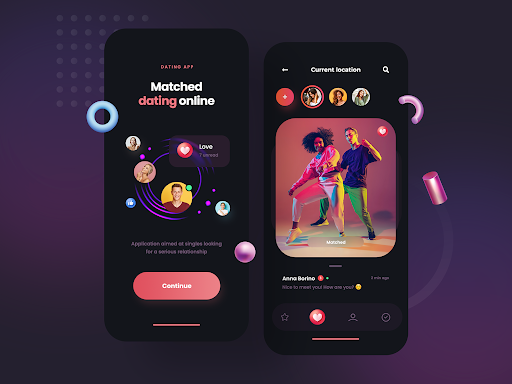

Match Users for Online Dating¶
When it comes to online dating, matching users based on mutual interests and their personal preferences, while enabling real-time communication are key to finding the right counterpart. This recipe enables developers to dynamically determine which pairs of people have connected and are ripe to get the ball rolling.

Step by step¶
Set up your environment¶
Provision a Kafka cluster in Confluent Cloud.
Once your Confluent Cloud cluster is available, create a ksqlDB application. ksqlDB supports a SQL language for processing the data in real time (and will soon support connector integration for reading and writing data to other data sources and sinks). Execute the recipe with the provided SQL commands using the Confluent Cloud ksqlDB editor.
Read the data in¶
Confluent Cloud offers pre-built, fully managed connectors that make it easy to quickly connect to popular data sources and end systems in the cloud. This recipe shows sample connector configuration(s) below, each of which should be created separately. You can also substitute your own connectors to connect to any supported data source.
1 2 3 4 5 6 7 8 9 10 11 12 13 14 15 16 | |
Optional: If you cannot connect to a real datasource with properly formatted data, or if you just want to execute this recipe without external dependencies, no worries! In the next section, you'll see how to test the recipe by inserting mock data into the streams, using the ksqlDB command INSERT INTO.
ksqlDB code¶
The application breaks up the stream of messages into individual conversations and puts each of those conversations in time order, keeping track of the sender as we go.
Then it builds up the function (old_state, element) => ..., which considers different states.
NOTE: The Confluent Cloud Console does not allow you to execute this code in the ksqlDB editor as a single block. This limitation will be removed in the next release, but until then, copy and paste each statement into the editor and execute them one at a time.
1 2 3 4 5 6 7 8 9 10 11 12 13 14 15 16 17 18 19 20 21 22 23 24 25 26 27 28 29 30 31 32 33 34 35 36 37 38 | |
In the previous section Read the data in, if you did not have a real data source to connect to, you can now use ksqlDB to insert example events into the source topics with the following statements:
1 2 3 4 5 6 7 8 9 10 | |
Cleanup¶
To clean up the ksqlDB resources created by this recipe, use the ksqlDB commands shown below (substitute stream or topic name, as appropriate).
By including the DELETE TOPIC clause, the topic backing the stream or table is also deleted, asynchronously.
1 2 | |
If you also created connectors, you'll need to remove those as well.
Explanation¶
This solution builds up a query that can take a stream of messages and assemble them into a thread of conversations for analysis.
Tracking connections¶
If you look at those messages, it's clear that there are a lot of hellos
bouncing around, but beyond that it's hard to see any patterns. Let's
use some queries to make sense of it. We'll build up our answer to
"Who's connected to who?" gradually. Before we begin, here are some session
settings to make sure that we all get the same results:
1 2 | |
Split By conversation¶
The first step is to break the stream up into individual conversations. If we sort the sender and receiver of each message, we can create a unique ID for every pair that chats (or tries to start chatting), and use that to group all the events:
1 2 3 4 5 6 | |
Querying that looks like this:
1 | |
1 2 3 4 5 6 7 | |
NOTE:
Because we sorted the [send_id, recv_id] array, it doesn't matter if 1
was sending to 2 or 2 was sending to 1—we get the same conversation ID for both
directions.
Chat By chat¶
That's a big help—we can analyze conversations individually.
Let's put each of these conversations in time order, and keep track of the sender as we go.
We do this in two steps. First, we'll enhance our message_times column to
build up a map with the rowtime as the key and the send_id as the
value:
1 2 3 4 5 6 7 8 9 | |
Querying that looks like this:
1 | |
1 2 3 4 5 6 7 | |
It's almost right, but we want to be able to see those messages in
order. Let's turn the message_times map back into a sorted list with
ENTRIES(<map>, true):
1 2 3 4 5 6 7 8 9 10 11 12 | |
Querying that looks like this:
1 | |
1 2 3 4 5 6 7 | |
Perfect. If you pause and take a look at the 4<>5 row, you'll see we
nearly have our answer. First 5 sends a message, then 4 replies, then
5 follows up. That's a match! 1<>2 also matches, and it looks like
3 is getting nowhere with 4.
Stepping through conversations automatically¶
If our data sets were tiny, we'd be done—we can see by eye which
conversations match. To scale this up, let's teach ksqlDB to step
through that sorted array of message_times and track the steps of the
conversation flowing back and forth. We can do with the REDUCE
function.
REDUCE is a way of stepping through an array,
entry by entry, and boiling it down to a final result. We give it the
array (in our case, message_times), a starting state and a function
that can take our state and one element of the array, and give us the
next state.
Our state will track the steps in the flow and who sent the most recent message. We'll start with these placeholder values:
1 | |
And then build up the function (old_state, element) => ..., which
considers each possible case:
- If we're at the
startstep, the next message is always an opener. Move toopened. - If we're at
opened, and the message has a newsend_id, then the sender has changed and that's a reply. Move toreplied. - If we're at
replied, and the message has changedsend_idagain, that's a connection! Move toconnected. - In any other case, there's no change.
In code, that looks like this:
1 2 3 4 5 6 7 8 9 10 11 12 13 14 15 16 17 | |
Querying that looks like this:
1 | |
1 2 3 4 5 6 7 | |
Final answer¶
To wrap up, let's just trim that down to the final answers:
1 2 3 | |
1 2 3 4 5 | |